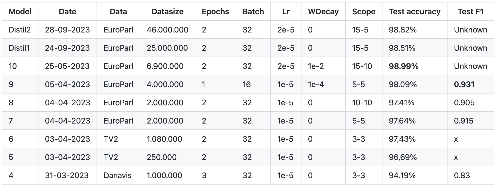
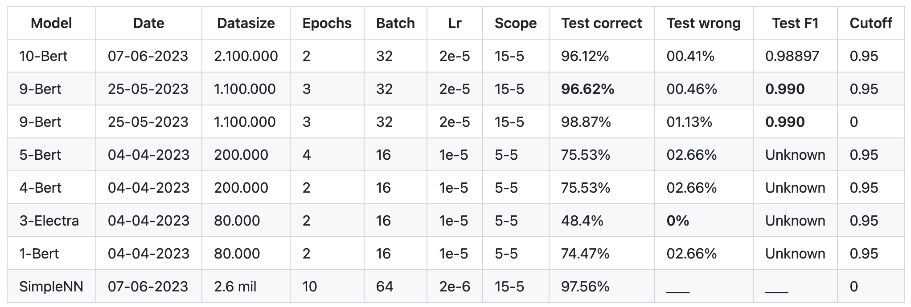
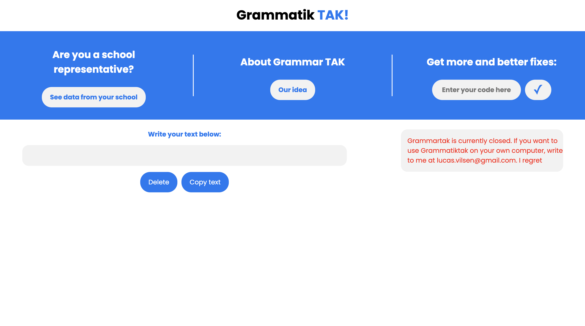

Original: Feb. 15 - 2024
Last edited: Feb. 17 - 2024
Creating Grammarly from scratch
Disclaimer: This Grammarly replica is built in Danish. The exact modules built here will be specific to Danish, but the methodology and implementation should not be specific to the language.
Backend | Frontend | Word add-in | Datasets
To my knowledge, no one has tried to create a complete replica of Grammarly in another language and document the process for others to learn from. I couldn't find anyone at least. So I decided to try this out myself. It's not easy, but definetely possible to get it to a stable and valuable state.
This will be a long post. I tried to divide into chapters as much as possible. Read what you need, skip what does not interest you. Here we go.
When reading this, please keep in mind that project took ~18 months to complete. So if you think something happened too fast, you can safely assume it took a month or two to do :-).
0. The idea
Building a complete replica of Grammarly is not possible and should not be the goal. What I find interesting is trying to rebuild the core functionality to get an idea of how it works. So the main goal here is to figure out how to:
- Make simple checkers to help out with spellchecking, simple grammar rules and punctuation
- Build a bigger model to tackle some problem better (either spellchecking, punctuation or something else)
- Hook everything up to work on the web & cloud
1. Where to begin?
Before beginning developing anythging, let's define how this project should be built
In real time, what happened is I developed this complete project without doing any considerations around structure, architecture, etc. This was a BIG mistake! So for that reason, let's tackle that issue first, and save 2-3 rounds of having to do a complete rewriting of the entire codebase.
The idea is to built each correcter as modules to easily be added, modified or deleted. But what modules provides value? After researching the topic, one report suggest the main issues are (in no specific order):
- Punctuation (main "," & ".")
- Capilization
- Spelling
- Wrong tense
- Lack of subject
- Articles
- Compound words
- Excessive spaces
- Double words
- Clarity?
1.1 Structure and utilities
The idea is to built simple modules to begin with in order to make sure the structure words before creating any substantial modules that then could have to be rewritten. The backend will be built in Python. It could be faster but this makes it possible to use existing packages to simplify the backend a lot! First we will tackle:
- Capitalization
- Excessive spaces
- Double words
Before developing any modules, let's build the outside structure. The modules are going to return a list of Errors that they find, so let's start by making such a class. The classes Error and ErrorList are created as some functionality is needed both for each error but also to add list of errors together. (see utils/error_handling.py). The class Error can be summarized by in this main method:
def to_list(self, include_type=False):
self.is_healthy()
if self.wrong_word == self.right_word:
print("ALERT: Error has the same wrong and right word, therefore skipped");
print(self.to_finalized_list());
return None
if include_type:
return [self.wrong_word, self.right_word, self.indexes, self.description, self.get_type()]
return [self.wrong_word, self.right_word, self.indexes, self.description]>
So what are the type? This helps with the problem of having multiple errors at the same place. Grammarly won't give you multiple errors on the same word - they concat them, so that's we have to do too. The error_concatenator() is a way for us to concat the errors together. This is a tedious, but rewarding process, and converts errors like this:
[
",", "", [18,19],
"There should not be a comma before 'that'", "del_punc"
]
+
[
"paul walker", "Paul Walker", [8,19],
"'Paul Walker' should be capitalized", "add_cap"
]
=>
[
"paul walker,", "Paul Walker",
[8,19],
"There should not be a comma before 'that'. 'Paul Walker' should be capitalized",
"add_cap"
]
Some modules has to work on characters, some on words. Another issue is that some modules may depend on others to make their predictions before others. So we need some way of converting from word indexes to characters indexes for a frontend to work with. And we need those indexes to be converted to the correct indexes from the input sentence, which could be different from the one each module is correcting.
To achieve this, the IndexFinder class was created. The class can be found on in Utilities/utils.py. When initialized, the input sentence is given. The IndexFinder is then passed around the modules, where they have the opportunity to change the sentence based on their errors if needed.
Before moving on the actually creating the modules, let's get the main script running. It should be fairly easy. Import the modules needed, initialize them, and make it work with a microweb framework like flask:
app = Flask(__name__)
CORS(app)
@app.route("/", methods=["POST"])
def index():
data = request.get_json()
input = data["sentence"]
output = correct_input(input)
return jsonify(output)
The correct input function can then correct however we want. CORS is needed to make it possible for the frontend to connect to the backend. It's not the best for backend, but it will work (hopefully). If this were to be deployed and recieve proper trafic, this part should probably be improved.
1.2. How hard can it be?
The first module we will create is the excessive spaces. To preserve some space (and your time) I will not go too much into detail about the code. I will explain the thought behind every module and how to achieve the functionality. This module is fairly safe. We want to remove leading, consecutive and trailing spaces. Check all characters from the front. If a space, suggest to delete. The same from the end to front. Then check each character. If more than one space, suggest to change to only on space.
Next is Compound words. This could be a sentence like: "I really really like a a cake". This isn't super valuable, but sometimes you won't see these simple errors. Now, there might be times when where the same word should appear twice in a row. To find these, you should scrape through a large collection of text. For danish I used Gigaword, but for english many other options exist including wikipedia, nltk & Spacy. We will have to scrape through large text chunks multiple times, so make sure to find a proper one. Ideally high quality like from newspapers, research rapports, etc.
After scraping through these, save all occurences where a word occurs twice in a row, and exclude them from checking. We also don't want to correct names, so make the module able to get a list of named entities and exclude them too. That should be it for this module.
The last module in this section is capitalization. This should take in the list of named entities mentioned above. Now go through every word, if the previous word has a full stop, suggest capitalization if not already. If the words is in the list of named entities, suggest capitalization. This module should also suggest to not capitalize words that does not meet the criteria. One important thing to now keep in mind is that this module has to be after punctuation as the punctuation might change as a result of that module.
1.3 Named Entity Recognition
Now, as mentioned above, we need to figure out which words are named entities. We also need to figure out each words part of speech. Lucky for us, this is nothing new and already implemented in various nlp libaries, so a quick grap and steal should be sufficient to get us going. English models are available at Huggingface, nltk, and Spacy, so it's just a matter of preference.
Take your NER and POS tagger (can be two different like in my case), and run then in the beginning of your main function, so that we can use it for later. Check that the NER works as expected in the capitalization and compound words modules.
1.4 Now to the fun part: training models
Or at least close to. Before training models, we need data. Remember to sources I mentioned earlier? Time to put them to good use. The important thing here is finding not only enough but text of extremely high quality. Go through some of it yourself to make sure it's good.
The dataset we create has to fit the model we choose. The first problem to tackle is punctuation. So before doing anything, we have to figure out the appropriate model to use.
1.5 Choosing the right model
The NLP space of deep learning models are booming, so we have plenty of models to take from. Or at least in english that is. In general, I see two ways of handling this problem (if something else comes to your mind, please reach out to me!)
- Seq-2-seq: You give the model a sentence and the model returns with a sentence with punctuation. The dataset has to be sentence to sentence, and you need A LOT OF data of high quality.
- BERT: You give the model a sentence and it returns with a classification. You need less data, but the inference might be slower, so a smaller model is needed for a reasonable compute time, but large enough to have a high enough accuracy. (BERT is the only available in danish, but you can use whatever. RoBERTa, destilBERT, Electra or a smaller GPT)
With Sep-2-sep the results were unreliable and the training time too costly, so I decided to move on with a danish, pre-trained BERT.. The dataset then had to be fairly simple to create. (As of Feb 2024, seq-2-seq might actually be the right solution as the growth in GPT's has been enourmous, so definitely check that out! Checkout Huggingface for models)
Before creating the dataset, let's decide on the scope. The scope are the size of the sentence that the is the input. You give x words to the left, y words to the right. After the middle word is where you predict the punctuation. In real time, there is only one way of knowing the right scope -> testing! And that's certainly not cheap. I did small experiments to see what happened. The smaller the scope, the faster the inference, the faster the training, but the lower the accuracy. So it's a fine line.
I initially tested with BERT (I logged most results here), but quickly switched to distilBERT for about 2x faster inference. You generally need more information from the left, but also a bit from the right. To achieve a high accuracy, but still fast inference, 15-5 seems to be the right scope. So given a sentence like this:
Hello, my name is Lucas. I like to train deep neural networks.
The dataset should look like this (here with a scope of 3-3 to show the idea). Remember to delete both capitalization and punctuation as knowing this will skew the accuracy and may not be present when correcting real sentences.
| input | output |
|---|---|
| PAD PAD hello my name is | 1 |
| PAD hello my name is lucas | 0 |
| Hello my name is lucas i | 0 |
| my name is lucas i like | 0 |
| name is lucas i like to | 2 |
| ... | ... |
Hopefully you get the idea.
1.6 Training
The dataset I used was about 46.000.000 elements long. The authers of BERT state that 2-4 epochs of fine-tuning is best. I found that 2 epochs was enough, with only a small, non-significant (~0.1%) increase in accuracy when training for 3 epochs. This was not worth it compared to the cost, so I decided to stick with 2.
The distilBERT was trained on Jarvislabs renting 6 A100s for ~10 hours totaling ~120 dollars. The script used for training can be found at FineTuneModels/FineTuneBert. This was certainly not the cheapest or best way to do it (As of Feb. 15, there should be must cheaper ways to fine-tune such a model with a much smaller training size aswell), but it got the job done.
1.7 Implementing into a module
Inference is a bit more different than training, but not too difficult to implement. The full module is implemented here . The most important thing is to argmax the outputs of the model as they are a from a softmax with 3 values, so the one with the highest value, should be the prediction. You of cource has to create the dataset from your input sentence, but besides that is shouldn't be too difficult:
def get_predictions(self, data : string):
dataset, split_indexes = self.get_dataset(data)
tokenized_data = self.tokenizer(dataset, padding=True, truncation=True)
final_dataset = Dataset(tokenized_data)
raw_predictions, _, _ = self.trainer.predict(final_dataset)
maxed_predictions = np.argmax(raw_predictions, axis=1)
return maxed_predictions
1) Create your dataset from your input sentence, 2) tokenize, 3) format into tensor dataset (this can be hard to get right, look at top of Utilities/model_utils.py to see how I implemented it), 4) run your model, and 5) max the predictions.
1.8 Additional modules
So a few modules are still missing. To cut down on the size of this post (yeah, maybe that's too late 😅?!) I will just quickly cover them.
Wrong tense: This approach was exactly the same as with punctuation. In danish, the main problem with tense is some verbs in present tense have a silent "r" at the end. To tackle this, a new dataset was created with the verb being unknown. So this time, the dataset will look something like this (with larger scope than shown here)
| input | output |
|---|---|
| PAD PAD hello my name is | 1 |
| PAD hello my name is lucas | 0 |
This did give some pretty good results:
In this case, the amount of wrong predictions was ~1%, which was a bit too high for me. I then only used the prediction if the confidence level (not really confidence in these models, but somewhat an estimate) was above 95%. This decreased the amount of wrong predictions to ~0.4% while only decreasing the accuracy with 2 pp (whoop whoop!!).
Spellchecking is a big project on it's own a way too much to cover here. I might do another post on that someday. I tried many different approaches: simple spellcheckers, n-grams, word-embeddings, and gpts. I ended up using a mix of a simple spellchecker formula by Peter Norvig ( this is btw an amazing read and I would highly recommend) and the specific issues around danish spelling allowing me to give good educated guesses on where the issues in the spelling might be.
Lack of subject is more of a modern problem, but I thought this would be fun to investigate. When writing more formal text, such lack of subject should definitely not be present. I didn't really find a satisfying solution to this problem. The main functionality at the moment is checking if the structure of the sentence matches some hard coded, frequent structures. If so, it's pretty easy to determine if the subject is missing and suggest one.
Articles can be difficult in danish just as in any other language, the most prominent issue being the difference in when to use a noun as common gender or neuter gender (most languages use masculine and feminine but it's essentially the same point). Thankfully, the POS tagger described earlier takes care of this when analyzing part-of-speech, so it's as simple as find the information in the POS object and checking that it matches the current sentence.
2. The frontend
Phew, that was tough. Now we need some place for the users to actually try the modules out and to get some data. This could be a website or some add in somewhere. This has to be deployed somewhere together with the backend.2.1 A simple webpage
There's many different ways of doing this. React or Angular is a way, but I decided to do it in plain html, css & js. It's definitely not the best, but it will do as a simple website for users to test on (the website is originally in danish, and google did the translations, so they might not be perfect):
I bought a simple domain, hooked it up with my github repo and launched to site with github pages. That is the benefit of developing in static sites. If I were to use some frameworks, vercel may be a way to host it.
2.2 Putting it all together
2.3 What about drift and accuracy in production?
You may have noticed that on the bottom of the website, there exists an option to give feedback. We also have the issue of drift in production together with the fact that we don't really know how well the modules work.
3. Other
3.1 High quality dataset
3.2 Word add-in
Credits: Many people are a reason this project came to be. They freely put their knowledge, models and data in a easy to manage and understand format for everyone to use. They deserve a big thank you! They did not in any way participate in this project and cannot be held accountable for anything related to this project.
- Leon Derczynski & Manuel R. Ciosici, ITU, Copenhagen: For sharing such an amazing, large collection of danish text for NLP development.
- Anita Ågerup Jervelund, dsn.dk: For sharing her knowledge on spelling and grammar mistakes in danish primary/high schools.
- certainly.io, Certainly, Malte Højmark-Bertelsen: For developing and training a widely available danish BERT for the danish NLP community.
I'm not sure anyone will get this far in my post. If you did, I truly hope you gained insights reading this for you to use in your future projects. Should you have any questions, then please reach out to me. Best of luck in the future!